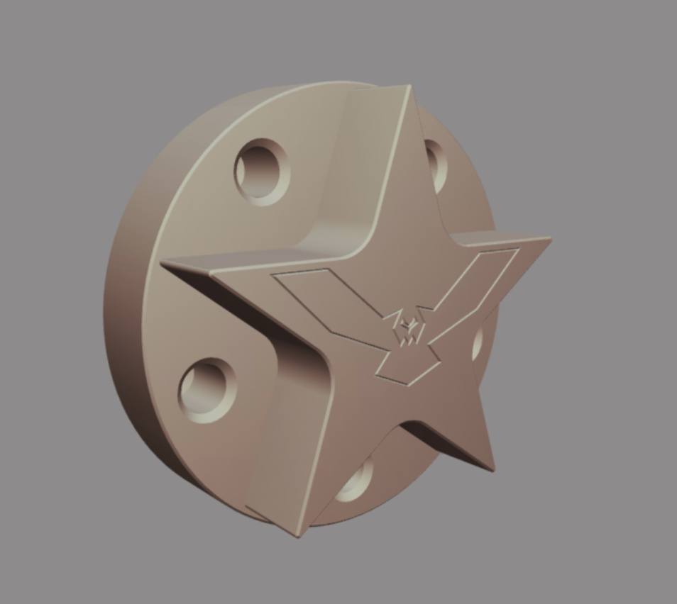
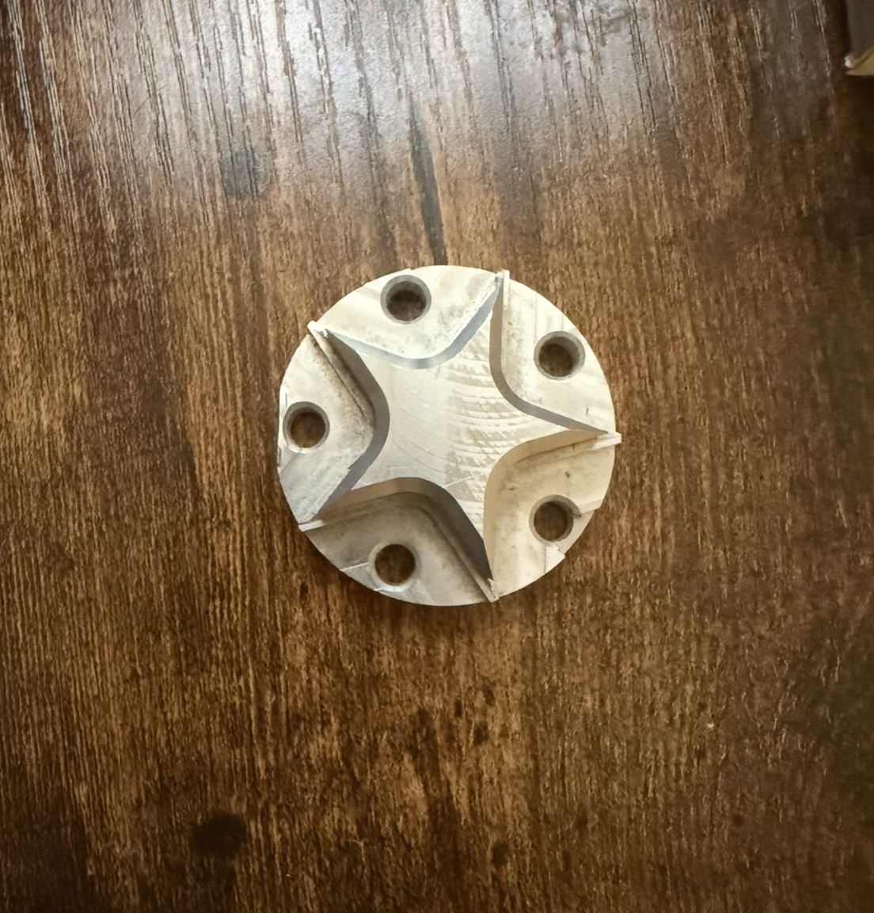

CNC-machined star part
I took this project from digital design to a physical part, completing the CAD model, preparing the CAM toolpaths, and carrying out the CNC machining.
- CAD Design
- CAM Programming
- CNC Machining
- Design for Manufacturing


CAD
Design the part
I created the digital model to define the part’s shape and features.
CAM
Plan the machining
I prepared the toolpaths to translate the CAD design into CNC machining operations.
CNC
Make the part
I carried out the CNC work to turn the digital design into the finished physical part.